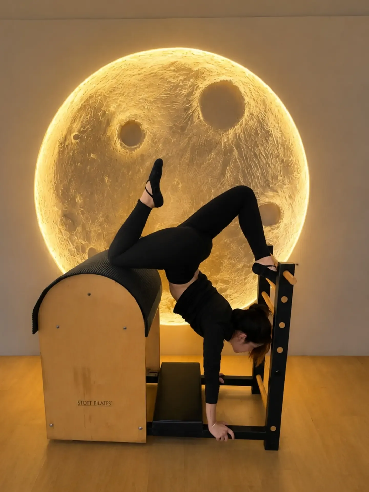
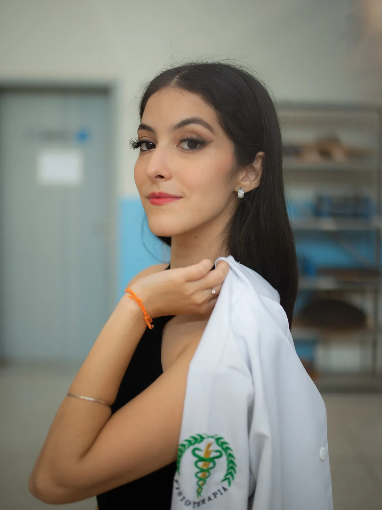

Onde o corpo pede atenção?
Toque em um ponto do corpo. Você lê como posso ajudar e a mensagem para o WhatsApp já sai pronta.
Escolha uma região para ver como a fisioterapia e o Pilates podem ajudar.
Cada caso começa com uma avaliação. Este texto é informativo e não substitui consulta.
Atendimentos em quatro fases, como a lua

-
Lua nova
Avaliação
Conversa sobre a sua rotina e o seu histórico, avaliação postural e do movimento. É daqui que sai o plano.
Agendar uma avaliação -
Crescente
Fisioterapia em casa
Sessões na sua casa, em Curitiba, com exercícios pensados para o seu espaço. Para quem tem rotina corrida, dificuldade para sair ou está em reabilitação.
Pedir atendimento em casa -
Cheia
Pilates
Aulas conduzidas por fisioterapeuta, em casa ou no estúdio [confirmar estúdio com ela]: força, mobilidade, postura e atenção à respiração.
Marcar uma aula de Pilates -
Minguante
Gestantes e pós-parto
Exercícios adaptados a cada trimestre, com liberação do obstetra, e a volta ao movimento depois do parto, sem pressa.
Conversar sobre a gestação
Quem pode fazer Pilates?
- quem nunca fez
- gestantes com liberação médica
- idosos
- quem passa o dia sentado
- quem está voltando de uma lesão
- atletas
- quem só quer se mexer melhor
Cada aula se adapta ao seu corpo. Antes de começar, uma avaliação define o que é seguro para você e por onde ir.
Como funciona
Contato
Você manda uma mensagem pelo WhatsApp e conta o que sente.
Avaliação
Conversamos e eu avalio postura e movimento, na sua casa ou no estúdio [confirmar estúdio].
Plano
Você recebe um plano com a frequência e os exercícios que cabem na sua rotina.
Acompanhamento
A cada encontro o plano é revisto conforme o seu corpo responde.

Sobre a Huallany
Sou fisioterapeuta formada pela UNESP e instrutora de Pilates. Atendo em domicílio em Curitiba [e no estúdio: confirmar com ela].
Cada atendimento começa por ouvir: a sua rotina, o que incomoda e o que você quer voltar a fazer. A partir daí o movimento vem com método, no seu ritmo, e o plano muda conforme o seu corpo responde.
- Fisioterapia pela UNESP
- Instrutora de Pilates
- CREFITO [confirmar nº com ela]
- Atendimento domiciliar em Curitiba
Dúvidas frequentes
Vamos marcar sua avaliação?
Preencha e a mensagem abre pronta no WhatsApp. Você revisa antes de enviar.